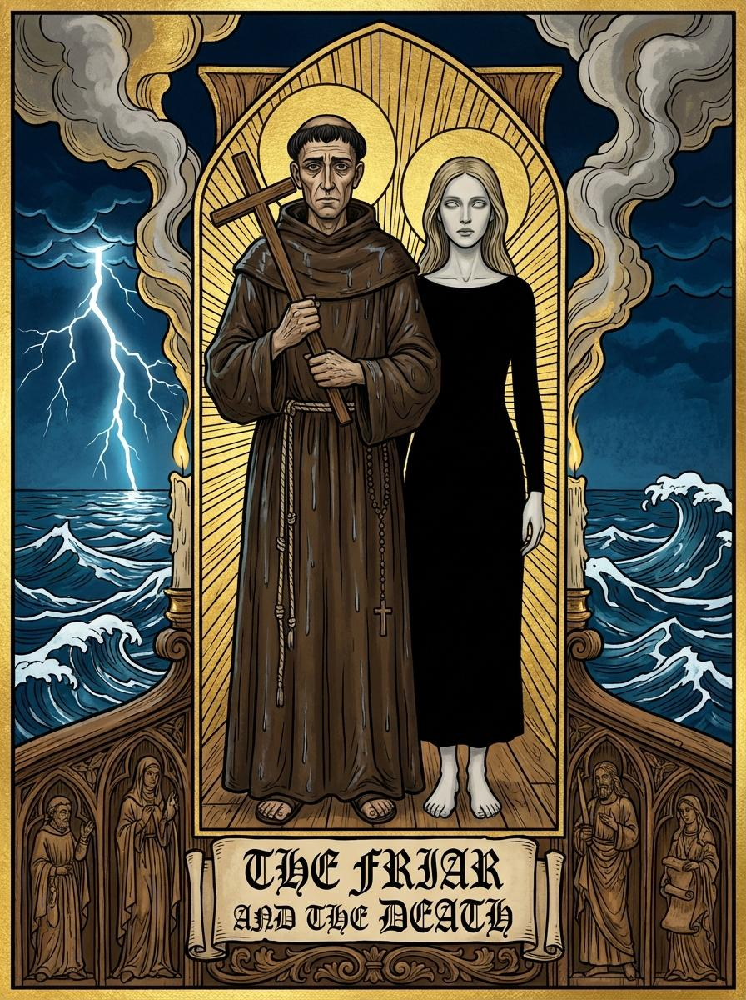
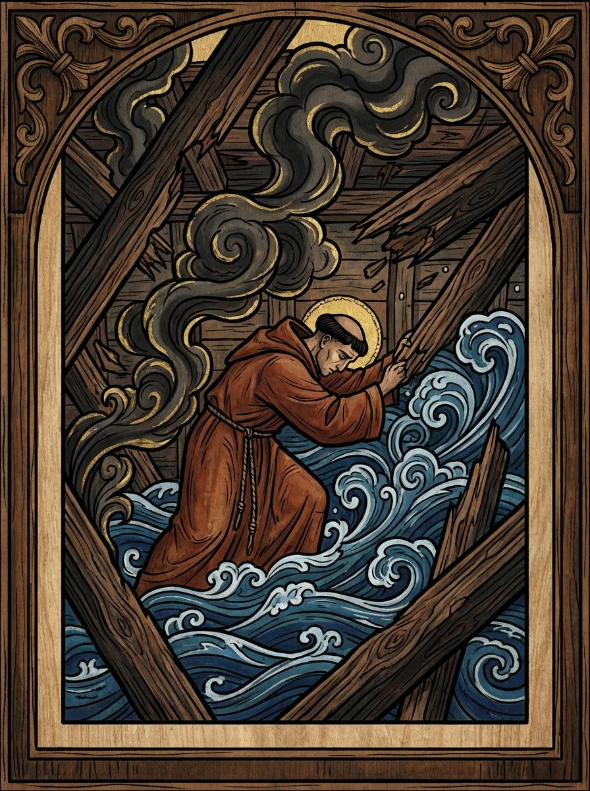
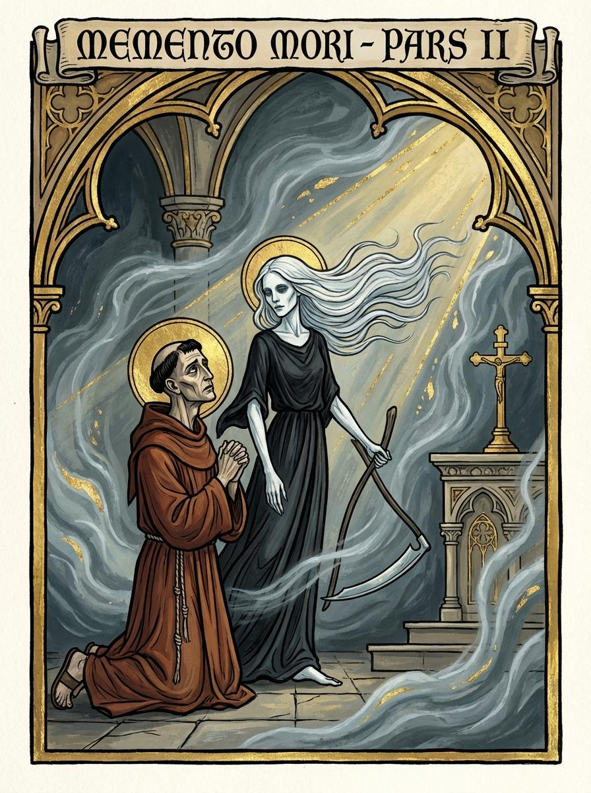
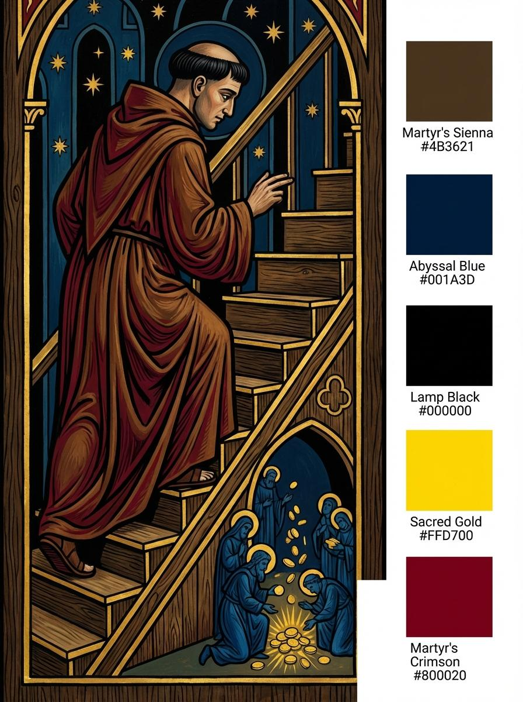
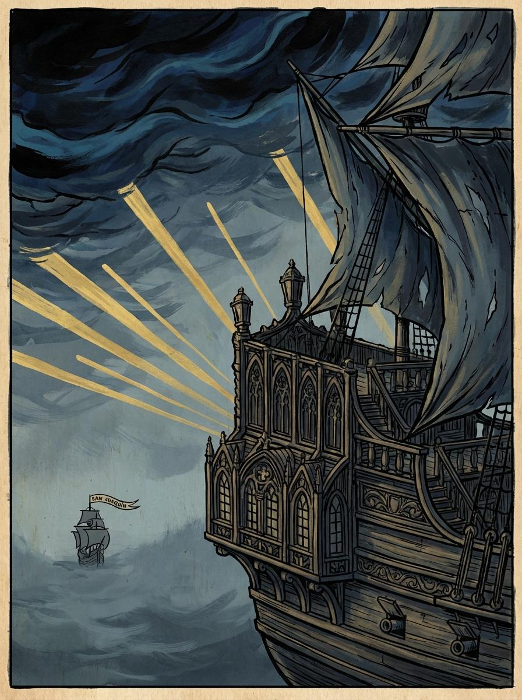
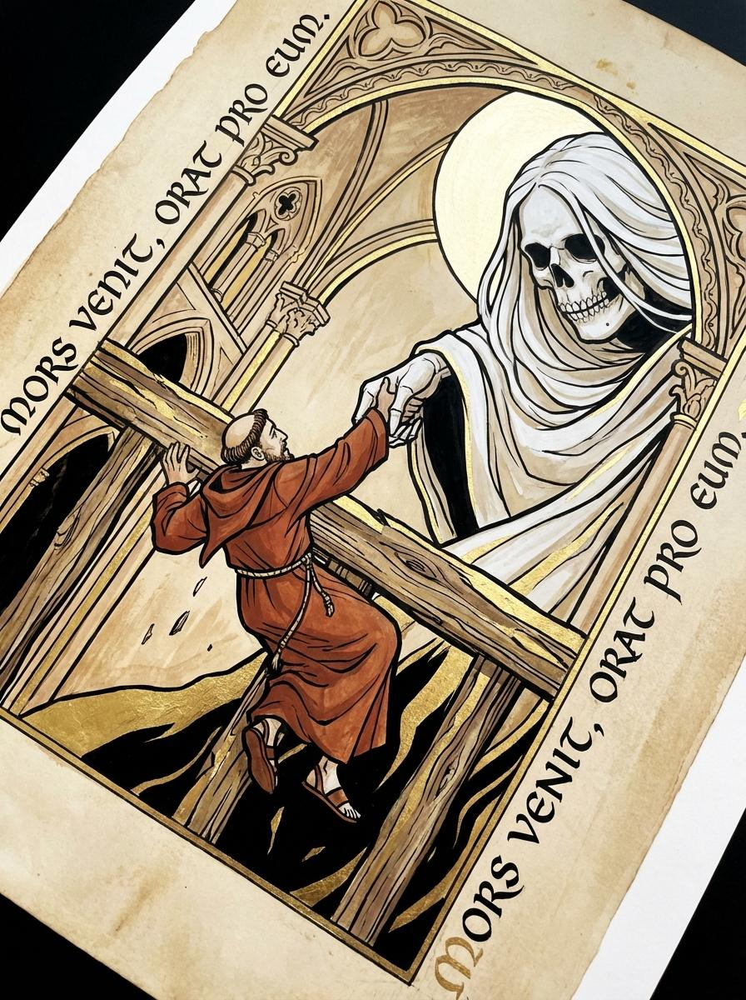
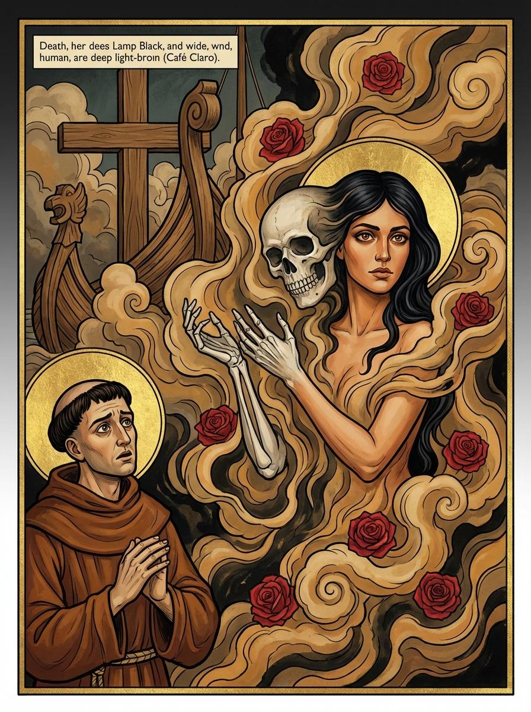
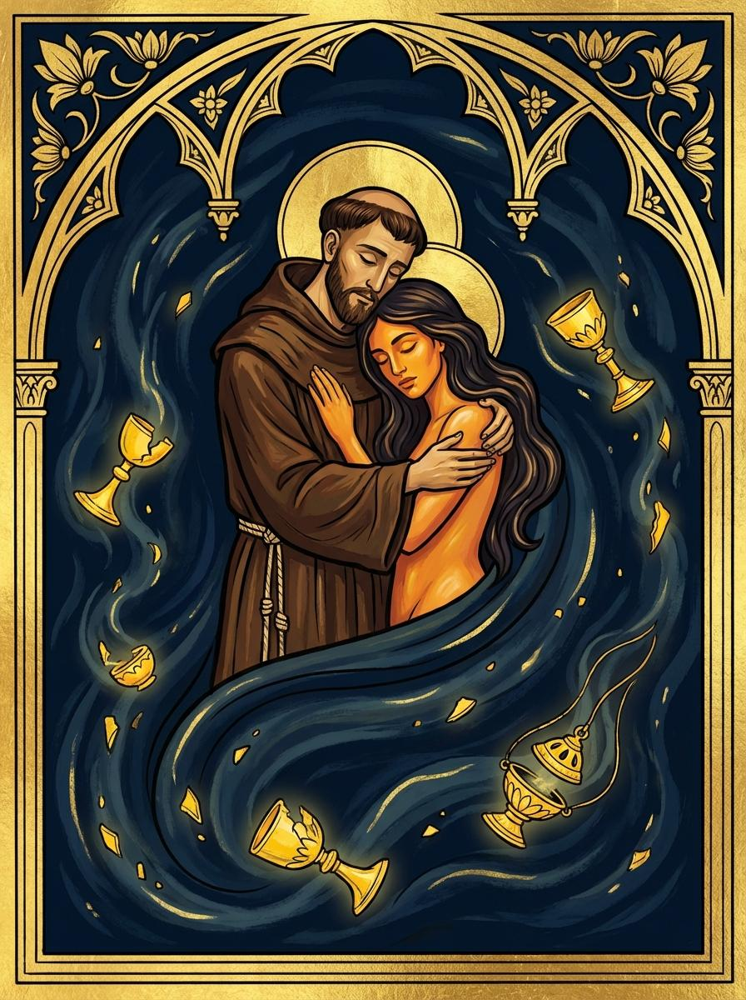

ECOS DEL SAN JOSÉ
Un suspiro en el abismo del Caribe

I. LA BRECHA / THE BREACH
El caos estalla. El San José se estremece mientras el agua helada invade las cubiertas. Escucho gritos que se ahogan en la pólvora y el salitre.
Chaos erupts. The San José shudders as ice-cold water invades the decks. I hear screams drowning in gunpowder and saltpeter.

II. PRIMER SUSPIRO / FIRST BREATH
En medio de la desesperación, una presencia serena me observa. La Muerte, vestida de negro, susurra: "Tranquilo, todo pasará. Estoy aquí porque ella así me lo pidió."
Amidst the despair, a serene presence watches me. Death, dressed in black, whispers: "Be calm, everything will pass. I am here because she asked me to be."

III. EL PURGATORIO / THE PURGATORY
Corredores estrechos donde las ratas huyen y los hombres pierden su alma por oro. Busco las escaleras, buscando la salvación en las alturas.
Narrow corridors where rats flee and men lose their souls for gold. I seek the stairs, looking for salvation in the heights.

IV. RUINA / RUIN
La cubierta es un escenario de devastación. El humo de los cañones oscurece el sol. Muchos buscan en mi hábito una absolución que yo mismo necesito.
The deck is a scene of devastation. Cannon smoke obscures the sun. Many seek absolution in my habit that I myself need.

V. EL COLOSO CAE / THE COLOSSUS FALLS
El San José se inclina hacia estribor. Una mano blanca y fría me sostiene. "Aún no", dice ella. Mi destino aguarda en la madera tallada.
The San José tilts to starboard. A cold, white hand holds me. "Not yet," she says. My destiny awaits in the carved wood.

VI. REVELACIÓN / REVELATION
La muerte se transforma. Reconozco sus ojos café, su piel cálida. Es ella, la mujer de mi celda, quien me dio su último suspiro y reclamó el mío.
Death transforms. I recognize her brown eyes, her warm skin. It is her, the woman from my cell, who gave me her last breath and claimed mine.

VII. SILENCIO / SILENCE
Nos hundimos seiscientos pies bajo las olas. Sus brazos son mi eternidad, nuestro amor el tesoro más grande oculto en el infinito del mar.
We sink six hundred feet beneath the waves. Her arms are my eternity, our love the greatest treasure hidden in the infinity of the sea.
Ecos del San José
"Inscritos en la infinitud del mar, ocultos en la eternidad en los brazos del uno y el otro."
Una obra de investigación y narrativa inspirada en los galeones de las Indias y los olvidos regionales del Caribe.
"Inscribed in the infinity of the sea, hidden in eternity in each other's arms."
A work of research and narrative inspired by the galleons of the Indies and the regional forgetfulness of the Caribbean.